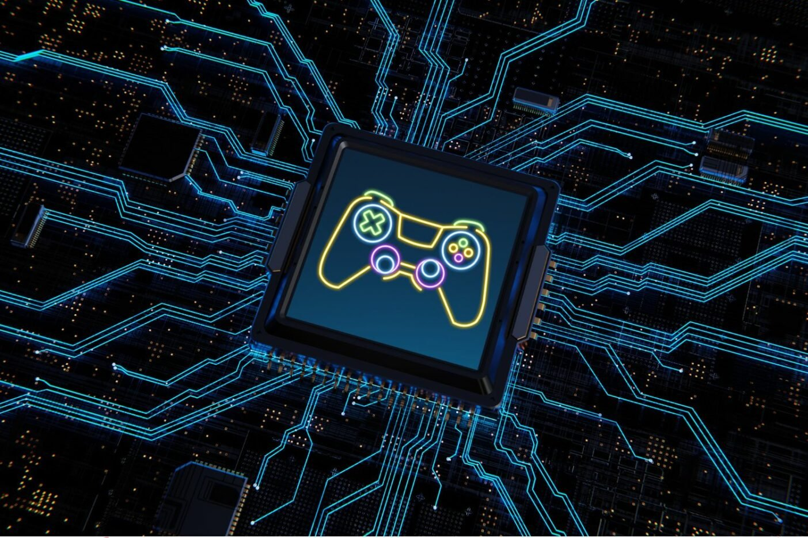

Les jeux vidéo sont des programmes informatiques interactifs conçus pour
divertir les utilisateurs. Ils combinent graphismes, sons et scénarios pour
créer des expériences immersives. Leur développement repose sur la
programmation, la conception graphique, l’intelligence artificielle et la
physique numérique. Les développeurs utilisent des langages comme C++, Python
ou Java, ainsi que des moteurs de jeu tels qu’Unity ou Unreal Engine.
L’informatique permet aussi d’optimiser les performances et la compatibilité
sur diverses plateformes (PC, consoles, mobiles). Les jeux vidéo exploitent
les bases de données pour sauvegarder les progrès et les profils des joueurs.
Le réseau informatique permet le jeu en ligne et les interactions multijoueurs.
Les avancées en réalité virtuelle et augmentée enrichissent encore l’expérience
. Enfin, les jeux vidéo représentent un domaine clé de recherche et
d’innovation technologique.En resumer, l’informatique est un des berceaux de naissance du
jeu vidéo. L’innovation technologique de l’informatique est un moteur d’évolution
des jeux vidéo : elle leur permet de devenir plus grands, plus beaux,
plus complexes, etc. La puissance accrue des machines permet aussi de
démocratiser la création de jeux vidéo. Elle devient ainsi accessible à
des personnes ayant peu, voire pas du tout, d’expérience en matière
d’informatique.On recense de nombreux échanges culturels réciproques
entre jeu vidéo et informatique : culture hacker (mouvement open source, etc.)
, recherche scientifique (intelligence artificielle, etc.), mèmes internet
populaires (oui mais, es-ce-qu'il peut rouler DOOM, etc.), etc.De nombreux informaticiens
et informaticiennes ont découvert l’informatique grâce aux jeux vidéo.
En retour, le travail de chaque nouvelle génération d’informaticiens
contribue à l’évolution technologique des jeux vidéo, émerveillant des
enfants qui découvriront à leur tour l’informatique par le prisme
vidéoludique. Pour certains d’eux, cela suscitera des vocations
d’informaticiens, perpétuant ainsi ce cercle vertueux.
